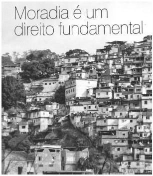

Conteúdo: Enchentes, lixo, moradias precárias, condições sanitárias, ilhas de calor, inversão térmica, chuvas ácidas.
Objetivo: Identificar os principais problemas socioambientais das grandes cidades. Entender a origem desses problemas e a sua relação com políticas de planejamento urbano ligadas ao transporte, à moradia e aos planos diretores.
Questão 01
(FUVEST 2013) – Observe a imagem e leia o texto.

Por muitos anos, as várzeas paulistanas foram uma espécie de quintal geral dos bairros encarapitados nas colinas. Serviram de pastos para os animais das antigas carroças que povoaram as ruas da cidade. Serviram de terreno baldio para o esporte dos humildes, tendo assistido a uma proliferação incrível de campos de futebol. Durante as cheias, tais campos improvisados ficam com o nível das águas até o meio das traves de gol.
Aziz Ab’Saber, 1956.
Considere a imagem e a citação do geógrafo Aziz Ab’Saber na análise das afirmações abaixo:
I. O processo de verticalização e a impermeabilização dos solos nas proximidades das vias marginais ao rio Tietê aumentam a sua susceptibilidade a enchentes.
II. A retificação de um trecho urbano do rio Tietê e a construção de marginais sobre a várzea do rio potencializaram o problema das enchentes na região.
III. A extinção da Mata Atlântica na região da nascente do rio Tietê, no passado, contribui, até hoje, para agravar o problema com enchentes nas vias marginais.
IV. A várzea do rio Tietê é um ambiente susceptível à inundação, pois constitui espaço de ocupação natural do rio durante períodos de cheias.
Está correto o que se afirma em
a) I, II e III, apenas.
b) I, II e IV, apenas.
c) I, III e IV, apenas.
d) II, III e IV, apenas.
e) I, II, III e IV.
Questão 02
(FGV) Considere a figura a seguir:

Sobre a figura, é correto afirmar que representa, de forma esquemática, o fenômeno denominado
a) ilha de calor provocada pela concentração de construções; o ar em 3 quente e seco permanece junto à superfície terrestre, enquanto o ar, em 2, permanece mais frio que em 3.
b) ilha de calor que se forma pela associação das condições de poluição local do ar com o avanço de ar 2, que é úmido; 1 e 2 permanecem sobre a cidade devido às baixas temperaturas do ar 3.
c) inversão térmica em que o ar 3 é frio e permanece próximo à superfície terrestre porque o ar 2, quente, funciona como um tampão, impedindo a ascensão do ar e dos poluentes.
d) frente fria provocada pelo deslocamento de ar polar, indicado pelo número 2, que fica comprimido entre o ar 3, carregado de poluentes, e o ar 1 que também é quente, mas livre de poluentes.
e) frente quente provocada pelo deslocamento de ar 3, que é continental e, por sua alta temperatura, é mais pesado e fica impedido de ascender devido ao ar 2, que é frio e não se mistura com o ar 1 que é quente.
Questão 03
(PUC-RS 2017) Sobre as causas e consequências da chamada “ilha de calor”, fenômeno típico das grandes cidades que colabora para o aumento dos índices de poluição urbana, afirma-se:

I. Ocorre uma elevação das temperaturas médias nas zonas periféricas da mancha urbana em relação às zonas centrais.
II. A substituição da vegetação – original ou plantada – por grande quantidade de prédios, ruas, avenidas e uma série de outras construções provoca significativo aumento da irradiação de calor para a atmosfera.
III. Nas zonas densamente urbanizadas, é grande a concentração de gases e materiais particulados, que têm a capacidade de amenizar a retenção de calor.
IV. A elevação da temperatura nas áreas centrais facilita a ascensão do ar quando não há inversão térmica, formando uma zona de baixa pressão para onde os ventos são direcionados, pelo menos durante o dia, elevando a concentração de poluentes. Estão corretas apenas as afirmativas
a) I e II.
b) I e III.
c) II e III.
d) II e IV.
e) I, III e IV.
Questão 04
(FUVEST SP 2010) Em algumas cidades, pode-se observar no horizonte, em certos dias, a olho nu, uma camada de cor marrom. Essa condição afeta a saúde, principalmente, de crianças e de idosos, provocando, entre outras, doenças respiratórias e cardiovasculares.

As figuras e o texto acima referem-se a um processo de formação de um fenômeno climático que ocorre, por exemplo, na cidade de São Paulo. Trata-se de
a) ilha de calor, caracterizada pelo aumento de temperaturas na periferia da cidade.
b) zona de convergência intertropical, que provoca o aumento da pressão atmosférica na área urbana.
c) chuva convectiva, caracterizada pela formação de nuvens de poluentes que provocam danos ambientais.
d) inversão térmica, que provoca concentração de poluentes na baixa camada da atmosfera.
e) ventos alíseos de sudeste, que provocam o súbito aumento da umidade relativa do ar.
Questão 05
(Católica-SC 2016) Analise a imagem a seguir:

Popularizados pelas redes sociais, os memes divertem e, muitas vezes, geram reflexões sobre os mais diversos temas. O meme acima, por exemplo, permite a discussão sobre um grave problema que atinge as áreas urbanas: as inundações.
Entre as ações humanas geradoras desse problema, pode-se citar:
a) a ocupação dos terraços fluviais e a destruição das matas de galeria.
b) a expansão das áreas urbanas sobre os divisores de água e a contaminação dos aquíferos.
c) a ocupação urbana em vertentes íngremes e a retirada de água do lençol freático.
d) o descarte irregular do lixo e a implementação de aterros sanitários em áreas urbanas.
e) a ocupação da planície de inundação do rio e a impermeabilização do solo.
Questão 06
(VUNESP 2013)

A manchete noticia o fechamento do Aterro Sanitário Metropolitano do Jardim Gramacho, após 34 anos de existência. O maior aterro sanitário da América Latina estava localizado à beira da Baía de Guanabara, sobre áreas de manguezais e cercado pelos rios Iguaçu e Sarapuí.
Cite e explique três razões ambientais ou sociais para esse fato ter sido comemorado.
Questão 07
(FUVEST SP 2015) O efeito estufa e o lixo são, talvez, as duas manifestações mais contraditórias da vontade de dominação da natureza posta em prática pela racionalidade instrumental e sua tecnociência. Com o objetivo de aumentar a produtividade, que na prática significa submeter os tempos de cada ente, seja ele mineral, vegetal ou animal, a um tempo da concorrência e da acumulação de capital, esqueceu-se de que todo trabalho dissipa energia sob forma de calor (efeito estufa) e que a desagregação da matéria, ao longo do tempo, torna-a irreversível (lixo).
Carlos W. Porto-Gonçalves. A Globalização da Natureza e a Natureza da Globalização. Rio de Janeiro: Civilização Brasileira, 2006. Adaptado.
Conforme o excerto acima, é correto afirmar:
a) Com o aumento da produtividade, será possível vencer o efeito estufa e superar o problema da produção de lixo.
b) A humanidade superou os problemas decorrentes da produção de lixo, graças à racionalidade instrumental e à tecnociência.
c) Os tempos da concorrência e da acumulação de capital vêm sendo subordinados ao tempo da natureza.
d) A aceleração do tempo de acumulação de capital permite eliminar a irreversibilidade da produção do lixo.
e) A busca pelo aumento da produtividade impõe a diferentes elementos da natureza o tempo dos interesses capitalistas.
Questão 08
(ENEM 2010) Os lixões são o pior tipo de disposição final dos resíduos sólidos de uma cidade, representando um grave problema ambiental e de saúde pública. Nesses locais, o lixo é jogado diretamente no solo e a céu aberto, sem nenhuma norma de controle, o que causa, entre outros problemas, a contaminação do solo e das águas pelo chorume (líquido escuro com alta carga poluidora, proveniente da decomposição da matéria orgânica presente no lixo).
RICARDO, B.; CANPANILLI, M. Almanaque Brasil Socioambiental 2008. São Paulo, Instituto Socioambiental, 2007.
Considere um município que deposita os resíduos sólidos produzidos por sua população em um lixão. Esse procedimento é considerado um problema de saúde pública porque os lixões
a) causam problemas respiratórios, devido ao mau cheiro que provém da decomposição.
b) são locais propícios à proliferação de vetores de doenças, além de contaminarem o solo e as águas.
c) provocam o fenômeno da chuva ácida, devido aos gases oriundos da decomposição da matéria orgânica.
d) são instalados próximos ao centro das cidades, afetando toda a população que circula diariamente na área.
e) são responsáveis pelo desaparecimento das nascentes na região onde são instalados, o que leva à escassez de água.
Questão 09
(ENEM) Chuva ácida é o termo utilizado para designar precipitações com valores de pH inferiores a 5,6. As principais substâncias que contribuem para esse processo são os óxidos de nitrogênio e de enxofre provenientes da queima de combustíveis fósseis e, também, de fontes naturais. Os problemas causados pela chuva ácida ultrapassam fronteiras políticas regionais e nacionais.

A amplitude geográfica dos efeitos da chuva ácida está relacionada principalmente com
a) a circulação atmosférica e a quantidade de fontes emissoras de óxidos de nitrogênio e de enxofre.
b) a quantidade de fontes emissoras de óxidos de nitrogênio e de enxofre e a rede hidrográfica.
c) a topografia do local das fontes emissoras de óxidos de nitrogênio e de enxofre e o nível dos lençóis freáticos.
d) a quantidade de fontes emissoras de óxidos de nitrogênio e de enxofre e o nível dos lençóis freáticos.
e) a rede hidrográfica e a circulação atmosférica.
Questão 10
(UNIOESTE PR 2015) Leia o trecho da reportagem abaixo.
É evidente a constatação que não basta construir novos bairros para substituir as favelas. É preciso incorporar as favelas às cidades e proporcionar melhores condições de moradia para quem já vive nelas. O alto custo do valor da terra nas grandes cidades e o fato de que as favelas já têm acesso a serviços públicos de transporte, saúde, educação etc. reforçam a importância de investir na melhoria das condições das moradias já existentes nas grandes cidades [...]. Em estudo recente, a ONU observa que, se providências não forem tomadas, o Brasil terá 55 milhões de habitantes (25% de sua população) morando em favelas até 2020. Isso representa um quarto da população brasileira vivendo em condições precárias de saúde e tendo sua educação comprometida.

Geografia Conhecimento Prático. Número 54. Editora Escala, 2014.
Com relação às favelas e à ocupação do solo urbano, assinale a alternativa INCORRETA.
a) A ocupação de áreas próximas aos canais fluviais, especialmente em planícies de inundação, ou em encostas íngremes, pode resultar em perdas humanas e prejuízos econômicos. As inundações e os deslizamentos de encostas são processos causados exclusivamente pela ação humana.
b) A produção de resíduos sólidos e seu destino têm sido um dos principais problemas urbanos. A partir de 2014, os resíduos sólidos deveriam ser direcionados apenas aos aterros sanitários. Diferente dos lixões, onde o lixo é despejado a céu aberto, os aterros são projetados para reduzir os danos ao ambiente e à saúde pública. A impermeabilização e o nivelamento do terreno, a captação do chorume e seu tratamento são algumas das ações presentes nos aterros sanitários.
c) Os condomínios fechados, cada vez mais presentes nas grandes cidades brasileiras, podem ser considerados um exemplo de como a cidade torna-se seletiva e colabora com a exclusão social. Há bairros luxuosos de um lado e conjuntos habitacionais populares, loteamentos clandestinos e favelas de outro, os quais, na prática, são a solução de moradia para os trabalhadores de baixa renda.
d) O processo de urbanização acelerou-se com as chamadas Revoluções Industriais nos séculos XVIII e XIX. Com elas surge a necessidade de mão-de-obra nas indústrias e consequentemente a redução do número de trabalhadores no campo. Naquele período, muitas cidades europeias tiveram crescimento rápido, porém, não fora acompanhado de infraestrutura para esses trabalhadores, pois muitos moravam em cortiços e era frequente a dissipação de doenças e epidemias por falta de saneamento básico.
e) As grandes cidades não têm a capacidade de absorver a imensa quantidade de imigrantes que nelas se instalam. Muitos desses trabalhadores têm baixa remuneração, o que dificulta a compra de moradia ou a locação de um imóvel, em função da especulação imobiliária. Essa população procura áreas de baixo valor imobiliário, áreas públicas ou particulares desocupadas, ou áreas de risco como encostas de morros, assim, geram-se favelas, as quais são visíveis na paisagem urbana.